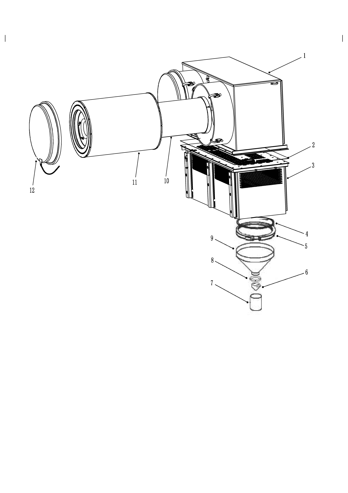

空滤管路安装 · AIR CLEANER PIPES ASSY
Спецификация
1
Воздушный фильтр в сборе
4
О-образное кольцо
7
Защитная трубка
10
Предохранительный фильтрующий элемент в сборе
2
Уплотнительная прокладка
5
Хомут
8
Зажим
11
Первичный фильтрующий элемент в сборе
3
Впускная камера
6
Клапан удаления пыли
9
Пылесборник
12
Крышка в сборе
Рис. 1. Воздушный фильтр в сборе в разобранном виде
Воздушный фильтр
Общие сведения
Воздушные фильтры состоят из двух коробчатых конструкций, устанавливаются по обе стороны двигателя под днищем передней части платформы.
Защитный козырек устанавливается над воздушным фильтром, предназначен для защиты от падающих камней и песка.
Управление (рис. 1)
Воздушный фильтр предназначен для очистки поступающего в двигатель воздуха. Вакуум образуется во впускной трубе в сборе при работе двигателя, при этом воздух всасывается через вход воздушного фильтра. Когда всасываемый воздух проходит через циклон впускной камеры (3), формируется движение по окружности, это играет роль в разделении инородных тел. Воздух через нижнюю часть циклона впускает в наполнительную камеру, направление воздушного потока внезапно изменяется изменении, воздух подается вверх через внутреннюю часть циклона. Вихревое движение воздуха и внезапное изменение направление воздуха дают возможность отделять большое количество пыли и посторонних предметов от воздуха, они оседают в пылесборник и выпускают через клапан удавления пыли. Это позволит очищать воздух от пыли на входе примерно на 80-90%.
Предварительно очищенный воздух поступает в первичный фильтрующий элемент в сборе (11), при этом производятся дальнейший сбор и абсорбция примесей в воздухе, потом воздух поступает в предохранительный фильтрующий элемент в сборе(10), данный элемент служит для окончательной очистки, играет защитную роль при выходе из строя первичного фильтрующий элемент в сборе. Очищенный воздух через промежуточный проход предохранительного фильтрующего элемента в сборе подается на вход двигателя (а именно вход турбонагнетателя).
Как правило, индикатор сопротивления или прибор позволяет контролировать засорение системы очистки воздуха, в рядовом случае они присоединяются к впускному штуцеру между воздушным фильтром и воздуховпускным отверстием двигателя (турбонагнетателя).
Клапан удаления пыли периодически выпускает примеси, отделенные в процессе предварительной очистки, когда двигатель нормально работает, система сжимает дно клапана под действием вакуума и держит его загерметизированным. Вакуум системы изменяется вслед за изменениями частоты вращения и мощности двигателя, клапан удаления пыли непрерывно действует под действием пульсаций, при этом осуществляется выпуск примесей, осажденных на дне. Клапан удаления пыли дает возможность периодически удалять примеси вторым способом, не требуется открывание емкости.
ПРИМЕЧАНИЕ: Не допускается произвольное снятие клапана удаления пыли, в случае обнаружения повреждения, необходима своевременная замена.
Уход и техническое обслуживание
ПРИМЕЧАНИЕ: Перед началом ремонта любых узлов и деталей впускной трубы следует выключить двигателя во избежание попадания пыли в двигатель. Следует избегать попадания любой пыли и примесей во впускную систему при работе двигателя.
Периодический уход за воздушным фильтром производится в следующем порядке:
1. Ежедневно проверять и удалить пыль из пылесборника (при эксплуатации в условиях повышенной запыленности следует почаще удалить пыль). Максимально допустимый уровень собранной пыли должен находиться в пределах расстояния 1 дюйм (25 мм) от полости трубопровода фильтра предварительной очистки.
a. Несколько раз нажать на клапан удаления пыли, чтобы удалить пыль и примеси из пылесборника.
b. Проверить клапан удаления пыли во избежание засорения или повреждения, очистить и замените его по мере необходимости.
2. Проверить все воздуховпускные отверстия во избежание повреждения или засорения. Проверить каждую резьбовую пробку выпускного штуцера, если отсутствует необходимость использования, то следует затянуть надлежащим образом.
3. Проверить все трубопроводы и штуцеры на наличие повреждений и утечек, проверить надежность крепления всех трубных хомутов.
4. Убедиться в нормальной работе индикатора засорения.
Индикатор засорения воздушного фильтра показывает степени засоренности воздушного фильтра и давление водяного столба во впускной системе. Как правило, если индикатор засорения превышает нижеуказанный допустимый предел, то это свидетельствует о необходимости ремонта фильтрующего элемента воздушного фильтра.
25″ в. ст. (6,2 кПа) - для двигателя Cummins
ВАЖНОЕ ПРИМЕЧАНИЕ: Данное давление измерено при номинальной мощности и частоте вращения.
ВАЖНОЕ ПРИМЕЧАНИЕ: Если один или несколько индикаторов загораются, то это свидетельствует о вероятности разгерметизации впускной системы. Для продолжения движения карьерного самосвала следует проверить данную систему.
Если существует необходимость ремонта фильтрующего элемента воздушного фильтра, то ремонт производится в следующем порядке:
ПРИМЕЧАНИЕ: При замене фильтрующего элемента не требуется снятие воздушного фильтра в сборе из автомобиля.
1. Снятие первичного фильтрующего элемента фильтра производится в следующем порядке:
a. Остановить карьерный самосвал в безопасном месте, кроме использования фрикционной системы торможения, еще нужно подложить клинья под колеса.
b. Выключить двигатель.
c. Очистить крышку фильтрующего элемента и воздушный фильтр в сборе от грязи, пыли и примесей.
d. Снять крышку в сборе.
e. Снять первичный фильтрующий элемент из воздушного фильтра в сборе.
ПРИМЕЧАНИЕ: Проверка фильтра в сборе не требует разборки, иначе это может привести к чрезмерному повреждению.
(1) Слегка сдвинуть фильтрующий элемент вперед-назад.
(2) В процессе выполнения операции будьте осторожны, чтобы предотвращать попадание мелких частиц на фильтрующий элемент или повреждение фильтрующего элемента.
ПРИМЕЧАНИЕ: Следует предотвращать попадание пыли в воздушный фильтр, при ремонте первичного фильтрующего элемента фильтра нельзя снять предохранительный фильтрующий элемент. Если отсутствует возможность своевременной замены фильтрующего элемента, то следует закрыть крышку до замены.
(3) Не допускается очистка фильтра путем постукивания, иначе это может привести к повреждениям фильтра и уплотнительного элемента.
ПРИМЕЧАНИЕ: Постукивание не дает возможность удалить пыль из глубины, перед установкой нового фильтра следует убедиться в надлежащей чистоте фильтрующего элемента.
f. Протереть уплотнительную поверхность фильтра и внутреннюю часть наружного трубопровода чистой хлопчатобумажной тканью.
ПРИМЕЧАНИЕ: Попадание грязи на уплотнительную поверхность может вызвать нарушение герметичности и привести к утечке, в связи с этим, следует защитить уплотненный участок трубопровода от повреждения.
g. Проверить и отремонтировать фильтрующий элемент по мере необходимости.
ПРИМЕЧАНИЕ: Если обнаружен очаг пылеобразования на чистой стороне фильтра, то существует вероятность утечки из фильтра, следует проводить осмотр и ремонт перед заменой фильтрующего элемента новым.
h. Если применяется иной первичный фильтрующий элемент фильтра, то повторять шаги от a до d.
2. Если существует необходимость замены предохранительного фильтрующего элемента, то снятие производится в следующем порядке:
ПРИМЕЧАНИЕ: Следует заменить данный фильтрующий элемент в соответствии с установленными требованиями или заменить его в том случае, если происходит повреждение или чрезмерное загрязнение, или горение индикатора необходимости ухода за фильтрующим элементом загорается для информировании о серьезном засорении фильтрующего элемента. Как правило, рекомендуется заменить предохранительный фильтрующий элемент после 3-ей замены первичного фильтрующего элемента фильтра.
a. Снять шплинт и индикатор необходимости ухода за фильтрующим элементом из предохранительного фильтрующего элемента в сборе.
b. Снять крышку, предохранительный фильтрующий элемент и прокладку.
c. Удалить накопившуюся пыль и все загрязняющие вещества с поверхностей воздушного фильтра в сборе, трубопроводов и уплотнительных элементов. Следует обращать особое внимание, предотвращать попадание грязи в чистую камеру воздушного фильтра или впускную трубу индукционной системы воздушного фильтра.
d. При замене фильтрующего элемента постараться минимизировать вероятность попадания грязи в систему. Если отсутствует возможность своевременной замены фильтрующего элемента, то следует тщательно герметизировать компоненты, чтобы предотвратить попадание примесей на внутреннюю поверхность.
Примечание:
1. Предохранительный фильтрующий элемент играет роль в увеличении надежности и работоспособности системы очистки воздуха. В целях достижения максимальной надежности и работоспособности не рекомендуется очищать предохранительный фильтрующий элемент, в случае обнаружения засорения фильтрующего элемента, то он должен быть забракован и заменен.
2. Рекомендуется заменить предохранительный фильтрующий элемент после 3-ей замены первичного фильтрующего элемента фильтра.
3. Если предохранительный фильтрующий элемент был снят, то установка производится в следующем порядке:
ВНИМАНИЕ
Запрещается использовать воздушный фильтр в том случае, если предохранительный фильтрующий элемент не устанавливается и не находится в хорошем состоянии.a. Перед установкой:
тщательно проверить новый фильтр, обратить внимание на внутреннюю сторону открытого конца уплотненного участка.
ПРИМЕЧАНИЕ: Запрещается установить поврежденный фильтрующий элемент с вмятиной или смятием.
b. Тщательно установить новый фильтрующий элемент фильтра, поместить его вручную и убедиться в надлежащей установке его в корпус.
ПРИМЕЧАНИЕ: Нельзя толкать фильтр до посадочного места крышкой смотрового окошка, поскольку это может привести к повреждению корпуса и утечке.
ПРИМЕЧАНИЕ: Если до полной установки крышки на посадочное место она соприкасается с фильтром, то следует снять крышку и установить фильтр (вручную) надлежащим образом. При этом крышка не находится под воздействием внешних сил.
c. Проверить все штуцеры и компоненты системы на наличие повреждений или утечек.
4. Установка первичного фильтрующего элемента фильтра производится в следующем порядке:
a. Перед установкой:
тщательно проверить новый фильтр, обратить внимание на внутреннюю сторону открытого конца уплотненного участка.
ПРИМЕЧАНИЕ: Запрещается установить поврежденный фильтрующий элемент с вмятиной или смятием.
b. Тщательно установить новый фильтрующий элемент, поместить его вручную и убедиться в надлежащей установке его в корпус.
ПРИМЕЧАНИЕ: Нельзя толкать фильтр до посадочного места крышкой смотрового окошка, поскольку это может привести к повреждению корпуса и утечке.
c. Проверить все штуцеры и компоненты системы на наличие повреждений или утечек.
Снятие
ПРИМЕЧАНИЕ: Замена фильтрующего элемента или очистка трубопроводов и выполнение подобных работ не требуют снятия воздушного фильтра в сборе из карьерного самосвала.
1. Остановить карьерный самосвал в безопасном месте, кроме использования фрикционной системы торможения, еще нужно подложить клинья под колеса.
2. Снять впускную трубу из сборочной единицы, загерметизировать воздушный фильтр в сборе и впускную трубу во избежание попадания пыли.
3. Плавно поднимать воздушный фильтр в сборе с помощью подъемного каната или подходящего подъемного устройства. Следует защитить сборочную единицу от повреждения вследствие соприкосновения его с канатом в процессе снятия.
4. Снять болты крепления сборочной единицы к кронштейну.
5. Снять болты крепления сборочной единицы к платформе.
6. Опустить сборочную единицу на поверхность земли. Следует обратить особое внимание, чтобы предотвращать повреждения любых компонентов.
Разборка
Снятие секции предварительной очистки из сборочной единицы производится в следующем порядке:
1. Открыть и опорожнить каждый пылесборник сборочной единицы.
2. Снять болты крепления фильтровальной сетки и секции предварительной очистки.
3. Снять секцию предварительной очистки.
Осмотр и ремонт
Ремонт производится в следующем порядке:
1. Очистить все металлические компоненты очищающим средством и протереть их, проверить наличие/отсутствие повреждений или утечек, отдать на ремонт или заменить детали по мере необходимости.
2. Проверить все уплотнительные прокладки, уплотнительные кольца и вакуумный клапан на наличие износа, утечек или повреждений. Отдать на ремонт или заменить детали по мере необходимости.
3. Проверить фильтрующий элемент в соответствии с требованиями, указанными в разделе «Уход и регулировки», заменить его по мере необходимости.
4. Проверить трубопроводы фильтр предварительной очистки. В случае обнаружения повреждения, необходима замена.
Примечание:
1. Тщательно очищать трубопроводы не реже одного раза в год или в процессе капремонта двигателя, если происходит загрязнение из-за разрыва маслопровода, то придется очищать еще чаще.
2. Запрещается очистить трубопроводы паром.
a. В случае обнаружения незначительного засорения пылью, можно устранить засорение с помощью щетки из жесткого волокна, затем продуть сжатым воздухом снизу и/или через вход.
ОПАСНО
Нельзя использовать металлическую щетку. При очистке трубопроводов следует установить первичный и предохранительный фильтрующие элементы. Это позволит избежать попадания пыли в воздушную камеру.b. В случае значительного засорения, требуется очистка в следующем порядке:
(1) Частично погрузить трубопровод в раствор Donaldson D-1400 и теплую воду температурой не более 150°F (66°C).
(2) Через 30 минут после погружения еще перемешивать на 15 минут.
(3) Промыть чистой водой и полностью высушить.
(4) Если засорение все-таки носит весьма серьезный характер, то устранить засорение с помощью раствора oakite202 (50% Oakite и 50% воды), повторять вышеуказанные шаги 2 и 3.
Сборка
Установка секции предварительной очистки на сборочную единицу производится в следующем порядке:
1. По очереди установить фильтрующие элементы двух ступеней надлежащим образом.
2. Установить крышку в сборе
3. Если пылесборник был снят, то обратно установить его надлежащим образом, следует обеспечить надлежащую герметичность разных частей.
4. Установить снятый дождевой чехол.
Установка
ПРИМЕЧАНИЕ: Перед установкой убедиться в отсутствии повреждений и нарушения герметичности воздушного фильтра в сборе и подводящего воздухопровода.
1. Поднять сборочную единицу должным образом и установить болты.
2. Присоединить впускную трубу к входу нагнетателя двигателя, установить индикатор сопротивления воздуха.
4. Проверить целую систему на наличие утечек или повреждений.
5. Проверить индикатор сопротивления воздушного фильтра.
6. Запустить двигатель карьерного самосвала и заново проверять наличие/отсутствие утечек. Проверка может производиться мыльным растворителем или другими подобными методами.
Устранение неисправностей
ВопросыВозможная причинаМетод устраненияПопадание пыли в двигательУтечка через впускную трубу или кожух воздушного фильтраПроверить, отремонтировать по мере необходимостиНарушение герметичности фильтрующего элемента воздушного фильтраНаличие дырочек на фильтрующем элементе воздушного фильтраФильтрующий элемент фильтра требует частой заменыВысокая запыленность воздухаУлучшать условия работы, уменьшать загрязнениеНенадлежащая эффективность предварительной очисткиПроверить, очистить, отремонтировать или заменить по мере необходимостиБольшое сопротивление потоку воздуха, проходящего через фильтрующий элемент, из-за влажности, засаливания или накопившейся пыли и по другим причинамСнижение мощности двигателя (часто сопровождается черным дымом)Загрязнение фильтрующего элемента фильтра из-за засоренияПроверить и отремонтировать фильтрующий элемент по мере необходимостиЗасорение впускной трубыПроверить, отремонтировать или заменить по мере необходимости
Силовая система – воздушный фильтр
040-0040
Силовая система –воздушный фильтр
040-0040
6
5
Силовая система –воздушный фильтр
040-0040
1
5
8
Дополнения - Масса компонентов
200-0090
Спецификация1Воздушный фильтр в сборе4О-образное кольцо7Защитная трубка10Предохранительный фильтрующий элемент в сборе2Уплотнительная прокладка5Хомут8Зажим11Первичный фильтрующий элемент в сборе3Впускная камера6Клапан удаления пыли9Пылесборник12Крышка в сборе
Рис. 1. Воздушный фильтр в сборе в разобранном виде
Иллюстрации
